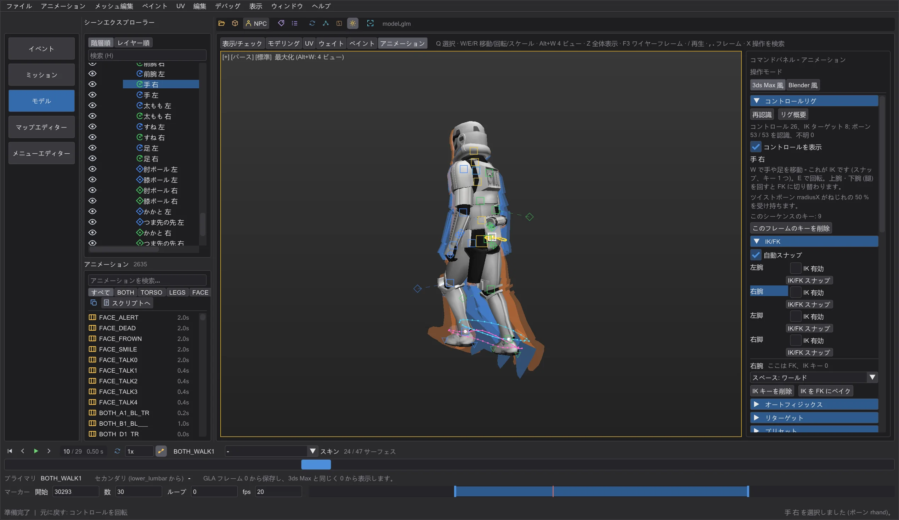
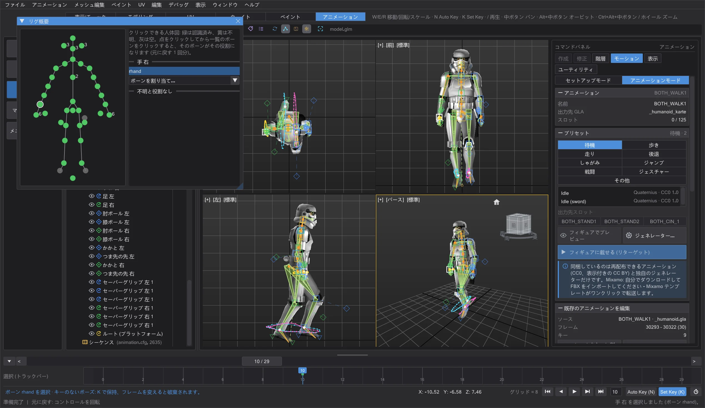
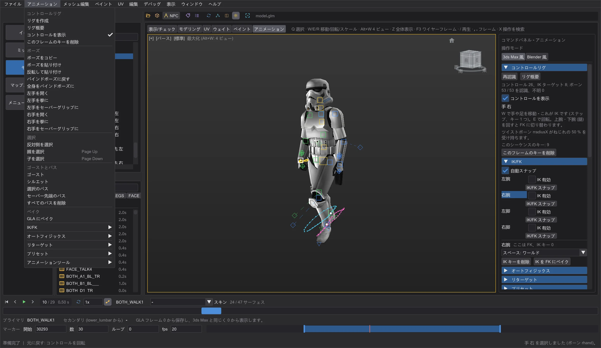

モデルタブ: コントロールリグ、ポーズ、ゴーストとパス
ボーンを認識し、ワンクリックでコントロールリグを作り、FK でポーズを付け、ポーズをコピー・反転し、ゴーストとモーションパスを見て、結果を GLA にベイクします。

ワンクリックでリグ#
アニメーション 領域で リグを作成 (メニュー アニメーション、ビューの右クリック、検索 X/F3 にもあります) がすべてのボーンを認識します: 役割 (骨盤、背骨、首、頭、鎖骨、上腕、前腕、手、指、太もも、すね、足、つま先、ツイストボーン、タグボーン、顔) と左右。名前が最初の答えを出し (pelvis、lhumerus、r_d1_j1、L_thigh、leg_left_bone01 ...)、階層とバインドポーズがそれを確かめます - 脚は肢が最も低く届く所に付き、肢の各部は外側へ順に続き、背骨は骨盤から頭へ上り、左右はスケルトンの左右軸から決まります。名前と位置が食い違う所では位置を優先し、ボーンを不明として示します。Jedi Academy (ボーン 53)、Jedi Outcast (72、すべて pelvis と thoracic の下に平らに並ぶ)、Movie Duels のクリーチャーとドロイドのスケルトンで動きます。リグは体の各部のコントロール、肘と膝のポールターゲット、フットロール (かかと、母指球、つま先の先)、*r_hand のセーバーグリップを持ちます。ポールターゲットとフットロールは IK で働きます (IK/FK のページ)。
概要: クリックで割り当て#
リグ概要 は人体図を表示します: 緑の点は認識済み、黄は不明、灰は空。数字はその役割を共有するボーンの数です (指、背骨)。点にカーソルを置くとボーンと、不明ならその理由が出ます。点をクリックしてから 不明と役割なし または ボーンを割り当て のボーンをクリックすると、そのボーンがその役割になります。割り当てはモデルドキュメントの一部で (Ctrl+Z)、リグはすぐに作り直されます。

ポーズ付け: 3ds Max 風と Blender 風の FK#
コントロールはシーンエクスプローラーの コントロールリグ の下 (専用の記号、目でビューから隠せます) とビューにあります - 3ds Max 風では箱、Blender 風では輪で、左は青、右は緑、中央は黄。ビューかエクスプローラーでクリックします。3ds Max 風では E で回転ギズモ、W で骨盤を移動。Blender 風では R で回転 (X/Y/Z で軸、クリックか Enter で確定、Esc で取り消し)、G で骨盤を移動。回転はすべて、ゲームが頭や胴を回すのと同じ FK (G2API_SetBoneAngles) で、選択中のシーケンスの現在フレームのキーになります。2 つのキーの間のポーズは補間されます。手に属するがスケルトン上は手の下にないボーン (Jedi Academy の rradius の下の指、Jedi Outcast の腕全体) は一緒に回り、ツイストボーン (rradiusX) は前腕上の位置に応じた割合のねじれを受け持ちます。キーはメッシュを作り直しません。Ctrl+Z で 1 つずつ戻せます。
ポーズ、反転、ハンドポーズ#
ポーズをコピー は見えているとおりの全ボーンのポーズを覚え、ポーズを貼り付け は別のフレームにキーとして置き、反転して貼り付け は左右を入れ替えてスケルトンの左右軸で反転して置きます (Blender 風: Ctrl+C、Ctrl+V、Ctrl+Shift+V)。バインドポーズに戻す (Blender Alt+R) と 全身をバインドポーズに は GLA のバインドポーズに戻します。ハンドポーズはゲーム自身のアニメーションから: 開くはバインドポーズ、拳は BOTH_MELEE1 の最初のフレーム、セーバーグリップは BOTH_STAND1 の最初のフレーム。選択では 親を選択 と 子を選択 がスケルトンをたどり (3ds Max の Page Up / Page Down、Blender の [ と ])、反対側を選択 が反対側のボーンへ移ります (Blender Ctrl+Shift+M)。

ゴースト、シルエット、モーションパス#
ゴースト は現在フレームの前 (青) と後 (橙) のポーズを半透明で表示します - 数と間隔は 前、後、間隔 で、色はその下で設定します。シルエット はフィギュアを明るい背景に黒で描き、ポーズの読みやすさを判断できます。選択のパス は選択中のボーンまたはタグ (セーバーなら *r_hand、足、ルート) の前後のフレームの軌跡を表示します: フレームごとに点、現在フレームは白、キーは四角。ゴーストとパスはシーケンス内にとどまり、キーにすぐ追従します。
GLA へのベイク#
GLA にベイク は選択中のシーケンスをリグのキー込みで GLA フレームとして書き、出力先 GLA とスロット の出力先 (マップ GLA、_humanoid.gla、独自 GLA) の次の空きスロットに置きます。キーのないボーンは元の GLA の 14 バイトのまま、変更したボーンは Carcass と同じく圧縮されます (compressBone)。変更のないリグは元のものをバイト単位でそのままベイクします - Jedi Academy、Jedi Outcast、Movie Duels のすべての GLA で確認済み。すべて圧縮し直してもクォータニオン成分ごとの差は量子化 2 段以内です。